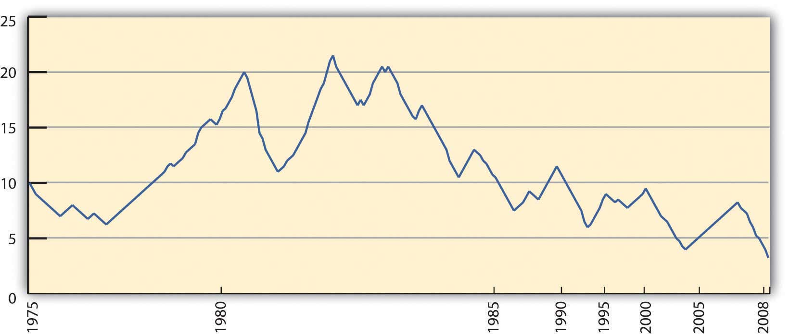

Financial management is about managing the financing for consumption and investment. You have two sources for money: yourself or someone else. You need to decide when to use whose money and how to do so as efficiently as possible: maximizing benefit and minimizing cost. As with all financial decisions, you also need to think about the strategic consequences for future decisions.
You can use your own money as a source of financing if your income is at least equal to your living expenses. If it is more, you have a budget surplus that can be saved and used as a source of future financing while earning income at the same time. If your own income is less than the expenses, you have a budget deficit that will require another external source of financing—someone else’s money—that will add an expense. Ideally, you want to avoid the additional expense of borrowing and instead create the additional income from saving. The budgeting techniques discussed in Chapter 5 "Financial Plans: Budgets" are helpful in seeing this picture more clearly.
Your ability to save will vary over your lifetime, as your family structure, age, career choice, and health will change. Those “micro” factors determine your income and expenses and thus your ability to create a budget surplus and your own internal financing. Likewise, your need to use external financing, such as credit or debt, will vary with your income, expenses, and ability to save.
At times, unexpected change can turn a budget surplus into a budget deficit (e.g., a sudden job loss or increased health expenses), and a saver can reluctantly become a borrower. Being able to recognize that change and understand the choices for financing and managing cash flow will help you create better strategies.
Financing can be used to purchase a long-term asset that will generate income, reduce expense, or create a gain in value, and it may be useful when those benefits outweigh the cost of the debt. The benefit of long-term assets is also influenced by personal factors. For example, a house may be more useful, efficient, and valuable when families are larger.
Macroeconomic factors, such as the economic cycle, employment, and inflation, should bear on your financing decisions as well. Your incomes and expenses are affected by the economy’s expansion or contraction, especially as it affects your own employment or earning potential. Inflation or deflation, or an expected devaluation or appreciation of the currency, affects interest rates as both lenders and borrowers anticipate using or returning money that has changed in value.
Financial management decisions become more complicated when the personal and macroeconomic factors become part of the decision process, but the result is a more realistic evaluation of alternatives and a better strategy that leaves more choices open in the future. Financial management decisions, however, are difficult not because of their complexity, but because the way you can finance your assets and expenses (i.e., lifestyle) determines the life that you live. The stakes are high.
Most people use a checking accountA bank account that is used to facilitate payment by check. as their primary means of managing cash flows for daily living. Incomes from wages and perhaps from investments are deposited to this account, and expenses are paid from it. The actual deposit of paychecks and writing of checks, however, has been made somewhat obsolete as more cash flow services are provided electronically.
When incoming funds are distributed regularly, such as a paycheck or a government distribution, direct depositAn automatic deposit of income directly to the receiver’s designated bank account; widely used by employers and government agencies. is preferred. For employers and government agencies, it offers a more efficient, timely, and secure method of distributing funds. For the recipient, direct deposit is equally timely and secure and can allow for a more efficient dispersal of funds to different accounts. For example, you may have some of your paycheck directly deposited to a savings account, while the rest is directly deposited to your checking account to pay living expenses. Because you never “see” the money that is saved, it never passes through the account that you “use,” so you are less likely to spend it.
Withdrawals or payments have many electronic options. Automatic paymentsA direct payment of an expense or a debt payment made as an electronic transfer of funds from the payer’s bank account to the payee’s. may be scheduled to take care of a periodic payment (i.e., same payee, same amount) such as a mortgage or car payment. They may also be used for periodic expenses of different amounts—for example, utility or telephone expenses. A debit cardA card that allows point-of-sale payment as an electronic transfer of funds from the payer’s bank account to the payee’s at the time of sale. may be used to directly transfer funds at the time of purchase; money is withdrawn from your account and transferred to the payee’s with one quick swipe at checkout. An ATM (automated teller machine) cardA card allowing direct access to a bank account through an automated teller machine (ATM), most often used to access cash without having to go to the bank housing the account. offered by a bank allows for convenient access to the cash in your bank accounts through instant cash withdrawals.
The bank clears these transactions as it manages your account, providing statements of your cash activities, usually monthly and online. When you reconcile your record keeping (i.e., your checkbook or software accounts) with the bank’s statement, you are balancing your checking account. This ensures that your records and the bank’s records are accurate and that your information and account balance and the bank’s are up to date. Banks do make mistakes, and so do you, so it is important to check and be sure that the bank’s version of events agrees with yours.
When incomes are larger than expenses, there is a budget surplus, and that surplus can be saved. You could keep it in your possession and store it for future use, but then you have the burden of protecting it from theft or damage. More important, you create an opportunity cost. Because money trades in markets and liquidity has value, your alternative is to lend that liquidity to someone who wants it more than you do at the moment and is willing to pay for its use. Money sitting idle is an opportunity cost.
The price that you can get for your money has to do with supply and demand for liquidity in the market, which in turn has to do with a host of other macroeconomic factors. It also has a lot to do with time, opportunity cost, and risk. If you are willing to lend your liquidity for a long time, then the borrower has more possible uses for it, and increased mobility increases its value. However, while the borrower has more opportunity, you (the seller) have more opportunity cost because you give up more choices over a longer period of time. That also creates more risk for you, since more can happen over a longer period of time. The longer you lend your liquidity, the more compensation you need for your increased opportunity cost and risk.
The markets for liquidity are referred to as the money marketsA market where short-term liquidity is traded. and the capital marketsA market where long-term liquidity is traded.. The money markets are used for relatively short-term, low-risk trading of money, whereas the capital markets are used for relatively long-term, higher-risk trading of money. The different time horizons and risk tolerances of the buyers, and especially the sellers, in each market create different ways of trading or packaging liquidity.
When individuals are saving or investing for a long-term goal (e.g., education or retirement) they are more likely to use the capital markets; their longer time horizon allows for greater use of risk to earn return. Saving to finance consumption relies more on trading liquidity in the money markets, because there is usually a shorter horizon for the use of the money. Also, most individuals are less willing to assume opportunity costs and risks when it comes to consumption, thus limiting the time that they are willing to lend liquidity.
When you save, you are the seller or lender of liquidity. When you use someone else’s money or when you borrow, you are the buyer of liquidity.
For most individuals, access to the money markets is done through a bank. A bank functions as an intermediaryA third party that facilitates trade between two parties. In financial services, a bank is an intermediary between lenders and borrowers. or “middleman” between the individual lender of money (the saver) and the individual borrower of money.
For the saver or lender, the bank can offer the convenience of finding and screening the borrowers, and of managing the loan repayments. Most important, a bank can guarantee the lender a return: the bank assumes the risk of lending. For the borrowers, the bank can create a steady supply of surplus money for loans (from the lenders), and arrange standard loan terms for the borrowers.
Banks create other advantages for both lenders and borrowers. Intermediation allows for the amounts loaned or borrowed to be flexible and for the maturity of the loans to vary. That is, you don’t have to lend exactly the amount someone wants to borrow for exactly the time she or he wants to borrow it. The bank can “disconnect” the lender and borrower, creating that flexibility. By having many lenders and many borrowers, the bank diversifies the supply of and demand for money, and thus lowers the overall risk in the money market.
The bank can also develop expertise in screening borrowers to minimize risk and in managing and collecting the loan payments. In turn, that reduced risk allows the bank to attract lenders and diversify supply. Through diversification and expertise, banks ultimately lower the cost of lending and borrowing liquidity. Since they create value in the market (by lowering costs), banks remain as intermediaries or middlemen in the money markets.
There are different kinds of banks based on what kind of brokering of money the bank does. Those differences have become less distinct as the banking industry consolidates and strives to offer more universal services. In the last generation, decreasing bank regulation, increasing globalization, and technology have all contributed to that trend. Different kinds of banks are listed below.
Retail banks are commonly known as thrift institutions, savings banks, savings and loan associations, or mutual savings banks and are usually private or public corporations. Credit unionsA retail banking institution that is either depositor- or member-owned. Membership is usually defined and limited to affiliation with a particular group—for example, state or union employees, or a religious or social affiliation. function similarly, but are cooperative membership organizations, with depositors as members.
In addition to banks, other kinds of intermediaries for savers include pension funds, life insurance companies, and investment funds. They focus on saving for a particular long-term goal. To finance consumption, however, most individuals primarily use banks.
Some intermediaries have moved away from the “bricks-and-mortar” branch model and now operate as online banks, either entirely or in part. There are cost advantages for the bank if it can use online technologies in processing saving and lending. Those cost savings can be passed along to savers in the form of higher returns on savings accounts or lower service fees. Most banks offer online and, increasingly, mobile account access, via cell phone or smartphone. Intermediaries operating as finance companies offer similar services.
Because their role as intermediaries is critical to the flow of funds, banks are regulated by federal and state governments. Since the bank failures of the Great Depression, bank deposits are federally insured (up to $250,000) through the FDIC (Federal Deposit Insurance Corporation). Since the financial crisis of 2007–2009, bank money market funds also are insured. Credit union accounts are similarly insured by the National Credit Union Agency or NCUA, also an independent federal agency. In choosing an intermediary, savers should make sure that accounts are FDIC or NCUA insured.
Banks offer many different ways to save your money until you use it for consumption. The primary difference among the accounts offered to you is the price that your liquidity earns, or the compensation for your opportunity cost and risk, which in turn depends on the degree of liquidity that you are willing to give up. You give up more liquidity when you agree to commit to a minimum time or amount of money to save or lend.
For the saver, a demand depositAccounts from which withdrawals may be made “on demand,” such as a checking account. (e.g., checking account) typically earns no or very low interest but allows complete liquidity on demand. Checking accounts that do not earn interest are less useful for savings and therefore more useful for cash management. Some checking accounts do earn some interest, but often require a minimum balance. Time depositsAn account from which withdrawals are made over time, or funds that are deposited for a time., or savings accounts, offer minimal interest or a bit more interest with minimum deposit requirements.
If you are willing to give up more liquidity, certificates of deposit (CDs)A savings instrument requiring a minimum sacrifice of liquidity, either as a minimum deposit amount or a minimum time deposited, in exchange for a higher rate of earnings. offer a higher price for liquidity but extract a time commitment enforced by a penalty for early withdrawal. They are offered for different maturities, which are typically from six months to five years, and some have minimum deposits as well. Banks also can offer investments in money market mutual funds (MMMFs)A savings instrument invested in the money markets., which offer a higher price for liquidity because your money is put to use in slightly higher-risk investments, such as Treasury bills (short-term government debt) and commercial paper (short-term corporate debt).
Compared to the capital markets, the money markets have very little risk, so MMMFs are considered very low-risk investments. The trade-offs between liquidity and return are seen in Figure 7.3 "Savings Products versus Liquidity and Risk".
Figure 7.3 Savings Products versus Liquidity and Risk

As long as your money remains in your account, including any interest earned while it is there, you earn interest on that money. If you do not withdraw the interest from your account, it is added to your principal balance, and you earn interest on both. This is referred to as earning interest on interest, or compounding. The rate at which your principal compounds is the annual percentage rate (APR)The annual rate of interest on credit or debt. that your account earns.
You can calculate the eventual value of your account by using the relationships of time and value that we looked at in Chapter 4 "Evaluating Choices: Time, Risk, and Value"—that is,
where FV = future value, PV = present value, r = rate, and t = time. The balance in your account today is your present value, PV; the APR is your rate of compounding, r; the time until you will withdraw your funds is t. Your future value depends on the rate at which you can earn a return or the rate of compounding for your present account.
If you are depositing a certain amount each month or with each paycheck, that stream of cash flows is an annuity. You can use the annuity relationships discussed in Chapter 4 "Evaluating Choices: Time, Risk, and Value" to project how much the account will be worth at any point in time, given the rate at which it compounds. Many financial calculators—both online and handheld—can help you make those calculations.
Ideally, you would choose a bank’s savings instrument that offers the highest APR and most frequent compounding. However, interest rates change, and banks with savings plans that offer higher yields often require a minimum deposit, minimum balance, and/or a maintenance fee. Also, your interest from savings is taxable, as it is considered income. As you can imagine, however, with monthly automatic deposits into a savings account with compounding interest, you can see your wealth can grow safely.
Your choice of savings instrument should reflect your liquidity needs. In the money markets, all such instruments are relatively low risk, so return will be determined by opportunity cost.
You do not want to give up too much liquidity and then risk being caught short, because then you will have to become a borrower to make up that shortfall, which will create additional costs. If you cannot predict your liquidity needs or you know they are immediate, you should choose products that will least restrict your liquidity choices. If your liquidity needs are more predictable or longer term, you can give up liquidity without creating unnecessary risk and can therefore take advantage of products, such as CDs, that will pay a higher price.
Your expectations of interest rates will contribute to your decision to give up liquidity. If you expect interest rates to rise, you will want to invest in shorter-term maturities, so as to regain your liquidity in time to reinvest at higher rates. If you expect interest rates to fall, you would want to invest in longer-term maturities so as to maximize your earnings for as long as possible before having to reinvest at lower rates.
One strategy to maximize liquidity is to diversify your savings in a series of instruments with differing maturities. If you are using CDs, the strategy is called “CD laddering.” For example, suppose you have $12,000 in savings earning 0.50 percent annually. You have no immediate liquidity needs but would like to keep $1,000 easily available for emergencies. If a one-year CD is offering a 1.5 percent return, the more savings you put into the CD, the more return you will earn, but the less liquidity you will have.
A “laddering” strategy allows you to maximize return and liquidity by investing $1,000 per month by buying a one-year CD. After twelve months, all your savings is invested in twelve CDs, each earning 1.5 percent. But because one CD matures each month, you have $1,000 worth of liquidity each month. You can keep the strategy going by reinvesting each CD as it matures. Your choices are shown in Figure 7.4 "CD Laddering Strategy".
Figure 7.4 CD Laddering Strategy

A laddering strategy can also reflect expectations of interest rates. If you believe that interest rates or the earnings on your money will increase, then you don’t want to commit to the currently offered rates for too long. Your laddering strategy may involve a series of relatively short-term (less than one year) instruments. On the other hand, if you expect interest rates to fall, you would want to weight your laddering strategy to longer-term CDs, keeping only your minimum liquidity requirement in the shorter-term CDs.
The laddering strategy is an example of how diversifying maturities can maximize both earnings and liquidity. In order to save at all, however, you have to choose to save income that could otherwise be spent, suffering the opportunity cost of everything that you could have had instead. Saving is delayed spending, often seen as a process of self-denial.
One saving strategy is to create regular deposits into a separate account such that you might have a checking account from which you pay living expenses and a savings account in which you save.
This is easier with direct deposit of wages, since you can have a portion of your disposable income go directly into your savings account. Saving becomes effortless, while spending actually requires a more conscious effort.
Some savings accounts need to be “segregated” because of different tax consequences—a retirement or education account, for example. In most cases, however, separating accounts by their intended use has no real financial value, although it can create a psychological benefit. Establishing a savings vehicle has a very low cost, if any, so it is easy to establish as many separate funds for saving as you find useful.
Consumers use retail institutions, including the following:
Savings instruments include the following:
“Credit” derives from the Latin verb credere (to believe). It has several meanings as a verb in common usage—to recognize with respect, to acknowledge a contribution—but in finance, it generally means to allow delayed payment.
Both credit and debt are forms of borrowing. Credit is distinguished from debt in both its purpose and duration or timing, although in casual conversation the words are used interchangeably. Credit is used to purchase goods and services, to finance living expenses, or to make payments more convenient by delaying them for a relatively short time. Debt, on the other hand, is used to finance the purchase of assets—such as a car or a home—rather than to delay payment of recurring expenses.
The costs of credit and of debt are likewise different, given their different uses and time horizons. Often, people get into some trouble when they cannot distinguish between the two and choose the wrong form of financing at the wrong time. Figure 7.6 "Credit versus Debt" distinguishes credit from debt.
Figure 7.6 Credit versus Debt

Credit is issued either as installment credit or as revolving credit. Installment creditA form of credit used to purchase consumer durables, usually issued by one vendor for one item. is typically issued by one vendor, such as a department store, for a specific purchase. The vendor screens the applicant and extends credit, bearing the default riskThe risk that a borrower will not be able to meet interest obligations or principal repayment., or risk of nonpayment. Payments are made until that amount is paid for. Payments include a portion of the cost of the purchase and the cost of the credit itself, or interest.
Installment credit is an older form of credit that became popular for the purchase of consumer durables (i.e., furniture, appliances, electronics, or household items) after the First World War. This form of credit expanded as mass production and invention made consumer durables such as radios and refrigerators widely available. (Longer-term installment purchases for bigger-ticket assets, such as a car or property, are considered debt.)
Revolving creditA form of credit used to purchase consumer durables issued by a bank of finance company to purchase many items from many vendors. extends the ability to delay payment for different items from different vendors up to a certain limit. Such credit is lent by a bank or finance company, typically through a charge cardRevolving credit that must be periodically paid in full. or a credit cardRevolving credit that may not be paid in full, creating an interest expense.. The charge card balance must be paid in full in each period or credit cycleThe time period for extending and paying credit., while the credit card balance may not be, requiring only a minimum payment.
The credit card is a more recent form of credit, as its use became widely practical only with the development of computing technology. The first charge card was the Diners’ Club card, issued in 1950. The first credit card was the Bank Americard (now called Visa), issued by Bank of America in 1958, which was later followed by MasterCard in 1966. Retailers can also issue revolving credit (e.g., a store account or credit card) to encourage purchases.
Credit cards are used for convenience and security. Merchants worldwide accept credit cards as a method of payment because the issuer (the bank or finance company) has assumed the default risk by guaranteeing the merchants’ payment. Use of a credit card abroad also allows consumers to incur less transaction cost.
This universal acceptance allows a consumer to rely less on cash, so consumers can carry less cash, which therefore is less likely to be lost or stolen. Credit card payments also create a record of purchases, which is convenient for later record keeping. When banks and finance companies compete to issue credit, they often offer gifts or rewards to encourage purchases.
Credit cards create security against cash theft, but they also create opportunities for credit fraud and even for identity theft. A lost or stolen credit card can be used to extend credit to a fraudulent purchaser. It can also provide personal information that can then be used to assume your financial identity, usually without your knowing it. Therefore, handle your credit cards carefully and be aware of publicized fraud alerts. Check your credit card statements for erroneous or fraudulent charges and notify the issuer immediately of any discrepancies, especially if the card is lost or stolen. Failure to do so may leave you responsible for purchases you did not make—or enjoy.
Credit has become a part of modern transactions, largely enabled by technology, and a matter of convenience and security. It is easy to forget that credit is a form of borrowing and thus has costs. Understanding those costs helps you manage them.
Because consumer credit is all relatively short term, its cost is driven more by risk than by opportunity cost, which is the risk of default or the risk that you will fail to repay with the amounts advanced to you. The riskier the borrower seems to be, the fewer the sources of credit. The fewer sources of credit available to a borrower, the more credit will cost.
How do lenders know who the riskier borrowers are?
Credit ratingAn analysis of personal creditworthiness based on income, current credit and debt, and credit history. The assessment is done by a credit rating agency that makes the credit report available to lenders. agencies specialize in evaluating borrowers’ credit risk or default risk for lenders. That evaluation results in a credit scoreA numerical score that rates personal creditworthiness in the credit rating process., which lenders use to determine their willingness to lend and their price.
If you have ever applied for consumer credit (a revolving, installment, or personal loan) you have been evaluated and given a credit score. The information you write on your credit application form, such as your name, address, income, and employment, is used to research the factors for calculating your credit score, also known as a FICO (Fair Isaac Corporation) score after the company that developed it.
In the United States, there are currently three major credit rating agencies: Experian, Equifax, and TransUnion. Each calculates your score a bit differently, but the process is common. They assign a numerical value to five characteristics of your financial life and then compile a weighted average score. Scores range from 300 to 900; the higher your score, the less risky you appear to be. The five factors that determine your credit score are
The rating agencies give your payment history the most weight, because it indicates your risk of future defaults. Do you pay your debts? How often have you defaulted in the past?
The credit available to you is reflected in the amounts you currently owe or the credit limits on your current accounts. These show how dependent you are on credit and whether or not you are able to take on more credit. Generally, your outstanding credit balances should be no more than 25 percent of your available credit.
The length of your credit history shows how long you have been using credit successfully; the longer you have been doing so, the less risky a borrower you are, and the higher your score becomes. Credit rating agencies pay more attention to your more recent credit history and also look at the age and mix of your credit accounts, which show your consistency and diversification as a borrower.
The credit rating process is open to manipulation and misinterpretation. Many people are shocked to discover, for example, that simply canceling a credit card, even for a dormant or unused account, lowers their credit rating by shortening their credit history and decreasing the diversity of their accounts. Yet, it may make sense for a responsible borrower to cancel a card. Credit reports may also contain errors that you should correct by disputing the information.
You should know your credit score. Even if you haven’t applied for new credit, you should check on it annually. Each of the three agencies is required to provide your score once a year for free and to correct any errors that appear—and they do—in a timely way. If you should find an error in your report, you should contact the agency immediately and follow up until the report is corrected.
Order your free annual credit report from the three credit reporting agencies at https://www.annualcreditreport.com/cra/index.jsp. (Beware of any other Web sites called “annual credit report” as these may be impostors.) It is important to check your score regularly to check for those errors. Knowing your score can help you to make financing decisions because it can help you to determine your potential costs of credit. It can also alert you to any credit or identity theft of which you otherwise are unaware.
Identity theftA fraud that occurs when the identity is used to access or create accounts for financial gain. is a growing problem. Financial identity theft occurs when someone poses as you based on having personal information such as your Social Security number, driver’s license number, bank account number, or credit card numbers. The impostor uses your identity to either access your existing accounts (withdrawing funds from your checking account or buying things with your credit card) or establish new accounts in your name and use those.
The best protection is to be careful how you give out public information. Convenience encourages more and more transactions by telephone and Internet, but you still need to be sure of whom you are talking to before giving out identifying data.
As careful as you are, you cannot protect yourself completely. However, checking your credit report regularly can flag any unfamiliar or unusual activity carried out in your name. If you suspect that your personal information has been breached, you can ask the credit reporting agencies to issue a fraud alert. Fraud alert messages notify potential credit grantors to verify your identification by contacting you before extending credit in your name in case someone is using your information without your consent. That way, if a thief is using your credit to establish new accounts (or buy a home, a car, or a boat) you will know it. If a stronger measure is needed, you can order a credit freeze that will prevent anyone other than yourself from accessing your credit file.
Credit cards issued by a bank or financing company are the most common form of revolving credit. This often has costs only after a repayment deadline has passed. For example, many credit cards offer a grace periodThe time between the purchase date and the date that interest is charged on revolving credit. between the time of the credit purchase or “charge” and the time of payment, assuming your beginning balance is zero. If you pay before interest is applied, you are using someone else’s money to make your purchases at no additional cost. In that case, you are using the credit simply as a cash management tool.
Credit cards are effective as a cash management tool. They can be safer to use than cash, especially for purchasing pricier items. Payment for many items can be consolidated and made monthly, with the credit card statement providing a detailed record of purchases. If you carry more than one card, you might use them for different purposes. For example, you might use one card for personal purchases and another for work-related expenses. Credit cards also make it convenient to buy on impulse, which may cause problems.
Problems arise if you go beyond using your card as a cash management tool and use it to extend credit or to finance your purchases past the payment deadline. At that point, interest charges begin to accrue. Typically, that interest is expensive—perhaps only a few percentage points per month, but compounding to a large annual percentage rate (APR).
Credit card APRs today may start with 0 percent for introductory offers and range from 8.75 percent to more than 20 percent. These rates may be fixed or variable, but in any case, when you carry a balance from month to month, this high interest is added to what you owe.
As an example, if your credit card charges interest of 1.5 percent per month, that may not sound like much, but it is an annual percentage rate of 18 percent (1.5% per month × 12 months per year). To put that in perspective, remember that your savings account is probably earning only around 1 to 3 percent per year. Consumer credit thus is an expensive way to finance consumption. Consumers tend to rely on their cards when they need things and lack the cash, and this can quickly lead to credit card debt.
According to recent surveys, 41 percent of college students have a credit card, and of those, about 65 percent pay their bills in full every month. This is higher than the general adult population, and fewer than half of U.S. families carry credit card debt.Federal Reserve Survey of Consumer Finances, February 2009, http://www.federalreserve.gov/PUBS/oss/oss2/scfindex.html (accessed February 11, 2009). Among the 35 percent of college students with credit cards who do not pay their balances in full every month, the average balance is $452.Student Monitor annual financial services study, 2008.
You should shop around for credit just as you would shop around for anything that you might purchase with it: compare the features and the costs of each credit card.
Features of the credit include the credit limit (or how much credit will be extended), the grace period, purchase guarantees, liability limits, and consumer rewards. Some cards offer a guarantee for purchases; if you purchase a defective item, you can have the charge “stopped” and removed from your credit card bill. Liability limits involve your responsibilities should your card be lost or stolen.
Consumer rewards may be offered by some credit cards, usually by rewarding “points” for dollars of credit. The points may then be cashed in for various products. Sometimes the credit card is sponsored by a certain retailer and offers rewards redeemable only through that store. A big sponsor of rewards has been the airline industry, commonly offering “frequent flyer miles” through credit cards as well as actual flying. Be aware, however, that many rewards offers have limitations or conditions on redemption. In the end, many people never redeem their rewards.
Creditors charge fees for extending credit. There is the APR on your actual credit, which may be a fixed or adjustable rate. It may be adjustable based on the age of your balance—that is, the rate may rise if your balance is over sixty days or ninety days. There may also be a late fee charged in addition to the actual interest. The APR may also adjust as your balance increases, so that even if you stay within your credit limit, you are paying a higher rate of interest on a larger balance.
There are also fees on cash advances and on balance transfers (i.e., having other credit balances transferred to this creditor). These can be higher than the APR and can add a lot to the cost of those services. You should be aware of those costs when making choices. For example, it can be much cheaper to withdraw cash from an ATM using your bank account’s debit card than using a cash advance from your credit card.
Many credit cards charge an annual fee just for having the credit card, regardless of how much it is used. Many do not, however, and it is worth looking for a card that offers the features that you want with no annual fee.
How you will use the credit card will determine which features are important to you and what costs you will have to pay to get them. If you plan to use the credit card as a cash management tool and pay your balance every month, then you are less concerned with the APR and more concerned about the annual fee, or the cash advance charges. If you sometimes carry a balance, then you are more concerned with the APR.
It is important to understand the costs and responsibilities of using credit—and it is very easy to overlook them.
Retailers also may offer credit, usually as installment credit for a specific purchase, such as a flat screen TV or baby furniture. The cost of that credit can be hard to determine, as the deal is usually offered in terms of “low, low monthly payments of only…” or “no interest for the first six months.” To find the actual interest rate you would have to use the relationships of time and value. Ideally, you would pay in as few installments as you could afford and would pay all the installments in the shortest possible time.
Retailers usually offer credit for the same reason they offer home delivery—as a sales tool—because most often, customers would be hesitant or even unable to make a durable goods purchase without the opportunity to buy it over time. For such retailers, the cost of issuing and collecting credit and its risk are operating costs of sales. The interest on installment credit offsets those sales costs. Some retailers sell their installment receivables to a company that specializes in the management and collection of consumer credit, including the repossession of durable goods.
Aside from installment credit and rotating credit, another source of consumer credit is a short-term personal loan arranged through a bank or finance company. Personal loans used as credit are all-purpose loans that may be “unsecured”—that is, nothing is offered as collateral—or “secured.” Personal loans used as debt financing are discussed in the next section. Personal loans used as credit are often costly and difficult to secure, depending on the size of the loan and the bank’s risks and costs (screening and paperwork).
A personal loan may also be made by a private financier who holds personal property as collateral, such as a pawnbroker in a pawnshop. Typically, such loans are costly, usually result in the loss of the property, and are used by desperate borrowers with no other sources of credit. Today, many “financiers” offer personal loans online at very high interest rates with no questions asked to consumers with bad credit. This is a contemporary form of “loan sharking,” or the practice of charging a very high and possibly illegal interest rate on an unsecured personal loan. Some loan sharks have been known to use threats of harm to collect what is owed.
One form of high-tech loan sharking growing in popularity on the Internet today is the “payday loanA small, short-term personal loan that charges a high rate of interest.,” which offers very short-term small personal loans at high interest rates. The amount you borrow, usually between $500 and $1,500, is directly deposited into your checking account overnight, but you must repay the loan with interest on your next payday. The loan thus acts as an advance payment of your wages or salary, so when your paycheck arrives, you have already spent a large portion of it, and maybe even more because of the interest you have to pay. As you can imagine, many victims of repeated payday loans fall behind in their payments, cannot meet their fixed living expenses on time, and end up ever deeper in debt.
Personal loans are the most expensive way to finance recurring expenses, and almost always create more expense and risk—both financial and personal—for the borrower.
As easy as it is to use credit, it is even easier to get into trouble with it. Because of late fees and compounding interest, if you don’t pay your balance in full each month, it quickly multiplies and becomes more difficult to pay. It doesn’t take long for the debt to overwhelm you.
If that should happen to you, the first thing to do is to try to devise a realistic budget that includes a plan to pay off the balance. Contact your creditors and explain that you are having financial difficulties and that you have a plan to make your payments. Don’t wait for the creditor to turn your account over to a debt collector; be proactive in trying to resolve the debt. If your account has been turned over to a collector, you do have some protections: the Fair Debt Collection Practices (federal) law keeps a collector from calling you at work, for example, or after 9 p.m.
You may want to use a credit counselor to help you create a budget and negotiate with creditors. Many counseling agencies are nonprofit organizations that can also help with debt consolidation and debt management. Some “counselors” are little more than creditors trying to sell you more credit, however, so be careful about checking their credentials before you agree to any plan. What you need is more realistic credit, not more credit.
As a last resort, you may file for personal bankruptcy, which may relieve you of some of your debts, but will blemish your credit rating for ten years, making it very difficult—and expensive—for you to use any kind of credit or debt. Federal bankruptcy laws allow you to file under Chapter 7 or under Chapter 13. Each allows you to keep some assets, and each holds you to some debts. Chapter 7 requires liquidation of most of your assets, while Chapter 13 applies if you have some income. It gets complicated, and you will want legal assistance, which may be provided by your local Legal Aid Society. The effects of a bankruptcy can last longer than your debts would have, however, so it should never be seen as an “out” but really as a last resort.
Modern laws and regulations governing the extension and use of credit and debt try to balance protection of the lender and of the borrower. They try to insure that credit or debt is used for economic purposes and not to further social or political goals. They try to balance borrowers’ access to credit and debt as tools of financial management with the rights of property owners (lenders).
In the United States, federal legislation reflects this balance of concerns. Major federal legislation in the United States is shown in Figure 7.10 "Major U.S. Federal Legislation: Credit and Debt".
Figure 7.10 Major U.S. Federal Legislation: Credit and Debt

In addition, many states have their own legislation and oversight. Not coincidentally, most of these laws were written after use of credit cards, and thus credit, became widespread. The set of laws and regulations that governs banking, credit, and debt markets has evolved over time as new practices for trading money are invented and new rules are seen as necessary. You should be aware of the limitations on your own behavior and on others as you trade in these markets.
If you feel that your legal rights as a borrower or lender have been ignored and that the offender has not responded to your direct, written notice, there are local, state, and national agencies and organizations for assistance. There are also organizations that help borrowers manage credit and debt.
Laws and regulations can govern how we behave in the credit and debt markets, but not whether we choose to participate as a lender or as a borrower: whether we use credit to manage cash flow or to finance a lifestyle, whether we use debt to finance assets or lifestyle, and whether we save. Laws and regulations can protect us from each other, but they cannot protect us from ourselves.
Credit accounts differ by the following features:
Credit accounts charge fees, such as the following:
Credit remedies include the following:
What is your credit rating or credit score? Apply for your three credit reports from Equifax (http://www.equifax.com), TransUnion (http://www.transunion.com), and Experian (http://www.experian.com). You can apply for all three at once from one source for free once each year, at https://www.annualcreditreport.com/. To ensure that you go to the legitimate site, type this URL directly into the address bar in your browser window.
Debt is long-term credit, or the ability to delay payment over several periods. Credit is used for short-term, recurring expenses, whereas debt is used to finance the purchase of long-term assets. Credit is a cash management tool used to create security and convenience, whereas debt is an asset management tool used to create wealth. Debt also creates risk.
Two most common uses of debt by consumers are car loans and mortgages. They are discussed much more thoroughly in Chapter 8 "Consumer Strategies" and Chapter 9 "Buying a Home". Before you get into the specifics, however, it is good to know some general ideas about debt.
Usually, the asset financed by the debt can serve as collateral for the debt, lowering the default risk for the lender. However, that security is often outweighed by the amount and maturity of the loan, so default risk remains a serious concern for lenders. Whatever concerns lenders will be included in the cost of debt, and so these things should also concern borrowers.
Lenders face two kinds of risk: default risk, or the risk of not being paid, and interest rate riskThe risk that a bond’s market value will be affected by a change in interest rates., or the risk of not being paid enough to outweigh their opportunity cost and make a profit from lending. Your costs of debt will be higher than the lender’s cost of risk. When you lower the lender’s risk, you lower your cost of debt.
Lenders are protected against default risk by screening applicants to try to determine their probability of defaulting. Along with the scores provided by credit rating agencies, lenders evaluate loan applicants on “the five C’s”: character, capacity, capital, collateral, and conditions.
Character is an assessment of the borrower’s attitude toward debt and its obligations, which is a critical factor in predicting timely repayment. To deduce “character,” lenders can look at your financial stability, employment history, residential history, and repayment history on prior loans.
Capacity represents your ability to repay by comparing the size of your proposed debt obligations to the size of your income, expenses, and current obligations. The larger your income is in relation to your obligations, the more likely it is that you are able to meet those obligations.
Capital is your wealth or asset base. You use your income to meet your debt payments, but you could use your asset base or accumulated wealth as well if your income falls short. Also, you can use your asset base as collateral.
Collateral insures the lender against default risk by claiming a valuable asset in case you default. Loans to finance the purchase of assets, such as a mortgage or car loan, commonly include the asset as collateral—the house or the car. Other loans, such as a student loan, may not specify collateral but instead are guaranteed by your general wealth.
Conditions refer to the lender’s assessment of the current and expected economic conditions that are the context for this loan. If the economy is contracting and unemployment is expected to rise, that may affect your ability to earn income and repay the loan. Also, if inflation is expected, the lender can expect that (1) interest rates will rise and (2) the value of the currency will fall. In this case, lenders will want to use a higher interest rate to protect against interest rate risk and the devaluation of repayments.
Because debt is long term, the lender is exposed to interest rate risk, or the risk that interest rates will fluctuate over the maturity of the loan. A loan is issued at the current interest rate, which is “the going rate” or current equilibrium market price for liquidity. If the interest rate on the loan is fixed, then that is the lender’s compensation for the opportunity cost or time value of money over the maturity of the loan.
If interest rates increase before the loan matures, lenders suffer an opportunity cost because they miss out on the extra earnings that their cash could have earned had it not been tied up in a fixed-rate loan. If interest rates fall, borrowers will try to refinance or borrow at lower rates to pay off this now higher-rate loan. Then the lender will have its liquidity back, but it can only be re-lent at a newer, lower price and create earnings at this new, lower rate. So the lender suffers the opportunity cost of the interest that could have been earned.
Why should you, the borrower, care? Because lenders will have you cover their costs and create a loan structured to protect them from these sorts of risks. Understanding their risks (looking at the loan agreement from their point of view) helps you to understand your debt choices and to use them to your advantage.
Lenders can protect themselves against interest rate risk by structuring loans with a penalty for early repayment to discourage refinancing or by offering a floating-rate loanA loan for which the interest rate can change, usually periodically and relative to a benchmark rate such as the prime rate. instead of a fixed rate-loanA loan for which the interest rate remains constant over the maturity of the loan.. With a floating-rate loan, the interest rate “floats” or changes, usually relative to a benchmark such as the prime rateA benchmark interest rate understood to be the rate that major banks charge corporate borrowers with the least default risk., which is the rate that banks charge their very best (least risky) borrowers. The floating-rate loan shifts some interest rate risk onto the borrower, for whom the cost of debt would rise as interest rates rise. The borrower would still benefit, and the lender would still suffer from a fall in interest rates, but there is less probability of early payoff should interest rates fall. Mainly, the floating-rate loan is used to give the lender some benefit should interest rates rise. Figure 7.12 "U.S. Prime Rate 1975–2008" shows the extent and frequency of fluctuations in the prime rate from 1975–2008.
Figure 7.12 U.S. Prime Rate 1975–2008Data from the U.S. Federal Reserve, http://federalreserve.gov/releases/h15/data/Monthly/H15_PRIME_NA.txt (accessed February 11, 2009).
Borrowers may be better off having a fixed-rate loan and having stable and predictable payments over the life of the loan. The better or more creditworthy a borrower you are, the better the terms and structure of the loan you may negotiate.
Debt should be used to finance assets rather than recurring expenses, which are better managed with a combination of cash and credit. The maturity of the financing (credit or debt) should match the useful life of the purchase. In other words, you should use shorter-term credit for consumption and longer-term debt for assets.
If you finance consumption with longer-term debt, then your debt will outlive your expenses; you will be continuing to pay for something long after it is gone. If you finance assets with short-term debt, you will be making very high payments, both because you will be repaying over a shorter time and so will have fewer periods in which to repay and because your cost of credit is usually higher than your cost of debt, for example, annual credit card rates are typically higher than mortgage rates.
Borrowers may be tempted to finance asset purchases with credit, however, to avoid the more difficult screening process of debt. Given the more significant investment of time and money in debt, lenders screen potential borrowers more rigorously for debt than they do for credit. The transaction costs for borrowing with debt are therefore higher than they are for borrowing with credit. Still, the higher costs of credit should be a caution to borrowers.
The main reason not to finance expenses with debt is that expenses are expected to recur, and therefore the best way to pay for them is with a recurring source of financing, such as income. The cost of credit can be minimized if it is used merely as a cash management tool, but if it is used as debt, if interest costs are allowed to accrue, then it becomes a very costly form of financing, because it creates new expense (interest) and further obligates future income. In turn, that limits future choices, creating even more opportunity cost.
Credit is more widely available than debt and therefore is a tempting source of financing. It is a more costly financing alternative, however, in terms of both interest and opportunity costs.